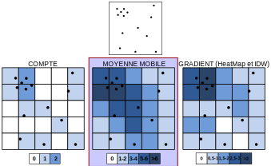
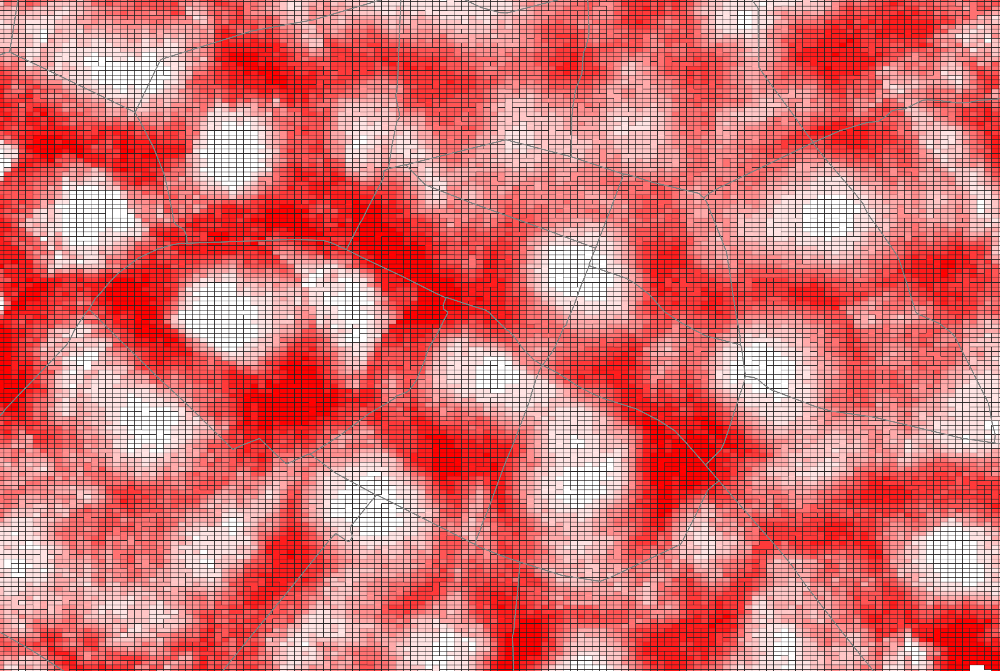
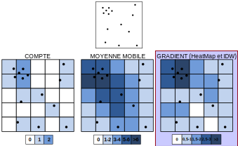

flowchart TB Points[Points] --> Grille(Grille 100*100) --> Buffer(Buffer 500m) --> PtsInPolygons(PtsInPolygons) --> JointureAttributaire(JointureAttributaire) --> Cartographie(Cartographie)
M2 Carthagéo - Du discret au continu - Séance 2
Séance 2 - Voisinages et densités
Voisinages et densités sur des points
non valués
Préambule : une approche naïve des voisinages
WarningExercice 0 : Mise en bouche
En utilisant uniquement des outils de manipulation de vecteurs, proposez une méthode pour calculer le nombre de bars situés à moins de 500m de tout point de Paris.
WarningExercice 0 : Mise en bouche
En utilisant uniquement des outils de manipulation de vecteurs, proposez une méthode pour calculer le nombre de bars situés à moins de 500m de tout point de Paris.
Raisonnement inverse : de la densité à l’accessibilité
WarningExercice 1 : Apéritif
Pour tout point de Paris, quelle est la distance au bar le plus proche ?
Raisonnement inverse : de la densité à l’accessibilité
WarningExercice 1 : Apéritif
Pour tout point de Paris, quelle est la distance au bar le plus proche ?
flowchart TB Points[Points] --> Grille(Grille 100*100) --> Jointure(Joindre les attributs<br/>par le plus proche) --> Cartographie(Cartographie du <br/>champ distance)
Calculs de densité et interpolation
Trois ensembles d’approches, quel que soit le type de données (valuées ou non)
⇰ Toutes ces approches se basent sur du calcul raster, bien plus rapide que le calcul vecteur.
Comptes (approche efficace)
- L’outil
Grille (Métrique des données)permet de créer une grille automatique à partir d’un compte des points dans un rayon donné. - Il permet aussi de mesurer une distance moyenne (ie. accessibilité moyenne) au sein d’une grille
Comptes (approche efficace)
WarningExercice 2 : Comptes
Calculer le nombre de bars situés à moins de 500m de tout point de Paris.
Comptes (approche efficace)
WarningExercice 2 : Comptes
Calculer le nombre de bars situés à moins de 500m de tout point de Paris.
flowchart TB Points[Points] --> Métrique(Métrique des données) --> Métrique2(Métrique : Compte) --> Rayon(500m pour les 2 rayons) --> Cartographie(Cartographie)

Distance (approche efficace)
WarningExercice 3 : Distance moyenne
Proposez et mettez en application un cas d’usage de la métrique Distance moyenne de l’outil Grille (Métrique des données). Qu’est-ce que cette méthodologie permet de mettre en évidence ?
Distance (approche efficace)
WarningExercice 3 : Distance moyenne
Proposez et mettez en application un cas d’usage de la métrique Distance moyenne de l’outil Grille (Métrique des données). Qu’est-ce que cette méthodologie permet de mettre en évidence ?
flowchart TB Points[Points] --> Métrique(Métrique des données) --> Métrique2(Métrique : Distance moyenne) --> Rayon(800m pour les 2 rayons) --> NbPoints(Points minimum : 5)
Tip
En utilisant l’outil Grille (Métrique des données), on peut trouver des hotspots de localisation de bars à Paris, c’est-à-dire des lieux qui montrent une concentration de bars hyper-locale importante au sein d’une densité locale plus faible.
Distance (approche efficace)
WarningExercice 4 : Distance moyenne
Proposez une méthodologie alternative permettant de détecter des hotspots.
TipDu continu au discret
On peut avoir besoin de discrétiser une information continue, par exemple pour la confronter/corréler à des données socio-démographiques ou pour en faire une représentation plus conformes aux besoins des acteurs territoriaux.
On effectue alors des opérations de “polygonisation”.
TipDu continu au discret
On peut avoir besoin de discrétiser une information continue, par exemple pour la confronter/corréler à des données socio-démographiques ou pour en faire une représentation plus conformes aux besoins des acteurs territoriaux.
On effectue alors des opérations de “polygonisation”.
WarningProblème : les polygones en sortie sont alors extrêmement nombreux et morcelés.

TipDu continu au discret
On peut avoir besoin de discrétiser une information continue, par exemple pour la confronter/corréler à des données socio-démographiques ou pour en faire une représentation plus conformes aux besoins des acteurs territoriaux.
On effectue alors des opérations de “polygonisation”.
WarningProblème : les polygones en sortie sont alors extrêmement nombreux et morcelés.
WarningExercice 5 : Polygonisation
Proposer une méthode pour que les polygones résultants soient moins morcelés.
WarningExercice 5 : Polygonisation
Proposer une méthode pour que les polygones résultants soient moins morcelés.
⇰ On peut utiliser la reclassification (Reclassification par table) pour discrétiser les valeurs du raster, avant de le polygoniser.

Prendre en compte la distance dans des mesures de densité
TipHeatmaps et kernel density
QGIS propose l’outil Carte de chaleur (Estimation par noyau) qui permet de mesurer des densités pondérées par la distance à chaque valeur.
Prendre en compte la distance dans des mesures de densité
TipHeatmaps et kernel density
QGIS propose l’outil Carte de chaleur (Estimation par noyau) qui permet de mesurer des densités pondérées par la distance à chaque valeur.
NoteFormes de gradients
Pour prendre en compte la distance, on applique une fonction qui diminue la pondération de chaque point en fonction de son éloignement.
La forme de cette fonction influe donc très fortement sur les résultats
Prendre en compte la distance dans des mesures de densité
TipHeatmaps et kernel density
QGIS propose l’outil Carte de chaleur (Estimation par noyau) qui permet de mesurer des densités pondérées par la distance à chaque valeur.
NoteFormes de gradients
Pour prendre en compte la distance, on applique une fonction qui diminue la pondération de chaque point en fonction de son éloignement.
La forme de cette fonction influe donc très fortement sur les résultats
Application
WarningExercice 6 : Heatmaps
Isolez les zones de forte concentration de bars à Paris en justifiant thématiquement chaque paramètre technique.
Même chose, mais en prenant en compte le prix de la pinte de bière (attribut
regularPrice) dans vos calculs.Faites varier la forme du kernel, quelle est l’influence sur vos résultats ? Comment justifier thématiquement le choix de chaque kernel ?
Bonus — Mener une analyse de sensibilité systématique en faisant varier le kernel et le rayon de recherche et comparez les résultats.